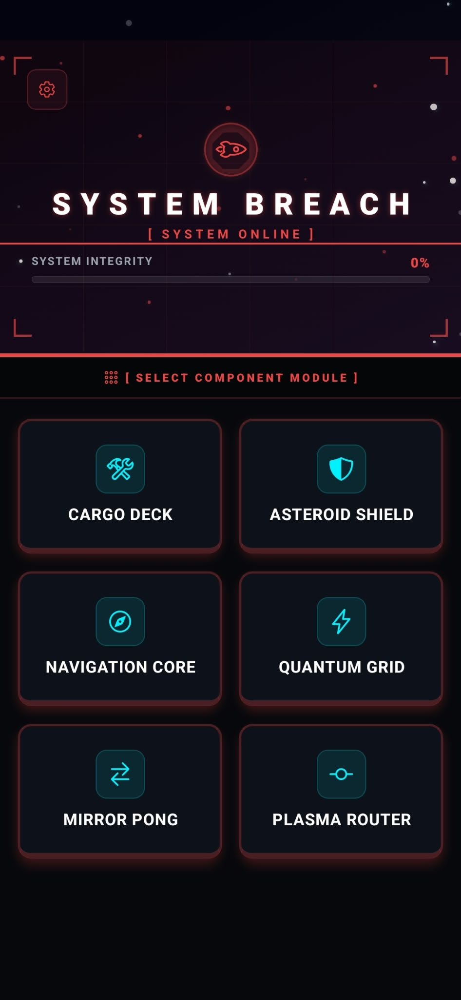

We all killed time in class with coins, notebook grids, and quick reflex games. System Breach brings six of those favorites into a single sci-fi survival terminal—built in React Native with clean physics, instant restarts, and zero battery-draining bloat.

Most mobile arcade games are stuffed with ads, energy meters, and lag. Here is how we designed a better session:
Tabletop games worked because physical friction gave you instant feedback. On a glass screen, naive physics simulations feel slippery and disconnect the player. Even worse, overly complex math loops turned smartphones into pocket heaters.
Instead of heavy physics engines, we built lightweight math that runs on the UI thread at a locked 60 FPS. Subtle haptic clicks on collisions brought back the physical satisfaction of classroom desk battles without draining the battery.
Arcade minigames get repetitive when played in isolation. We tied all six into an overarching ship survival interface: winning rounds restores hull integrity, while time away slowly drains it—giving casual plays real purpose.
Every minigame was tuned for fast, one-thumb interactions and instant feedback:
Three real product and technical headaches we had to solve before shipping v1.1.0:
In Game 3, stepping out to the home screen and coming back scrambled your target puzzle. Expo Router triggers a canvas layout resize on re-entry, and our initial code ran a fresh random board generation on that second render. We fixed it with a strict hydration ref lock—forcing the screen to load the saved state once and ignore all secondary repaints.
Early builds of Mirror Pong had a bizarre issue: the ball moved at a crawl horizontally, and complex angle recalculations pushed CPU usage so high the phone felt burning hot. We scrapped the multi-step trigonometry and derived bounce angles directly from the ball's distance to the paddle center. The result: responsive gameplay and a cool phone.
Ship integrity decays over time, but a naive timer reset the countdown every time you launched the app. If you checked in after 2 hours and 50 minutes, your elapsed progress was wiped clean without counting. We switched to clean 3-hour chunk math, deducting integrity in fixed intervals while preserving every leftover minute.